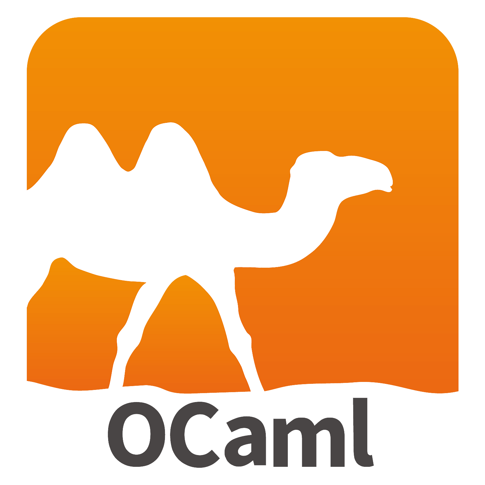
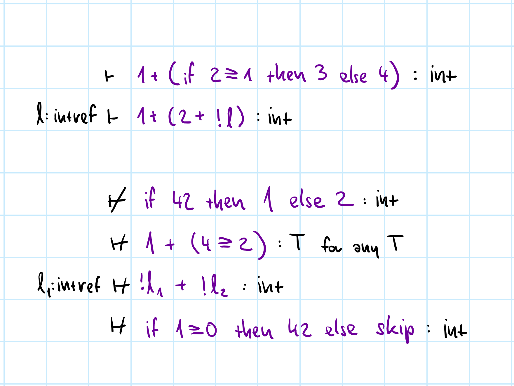
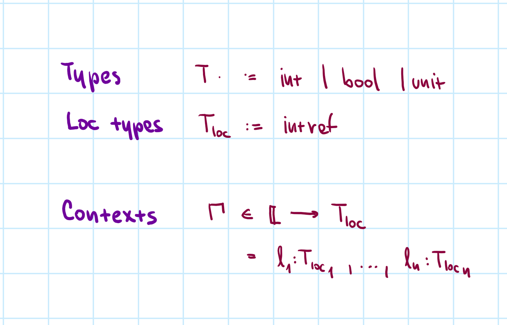
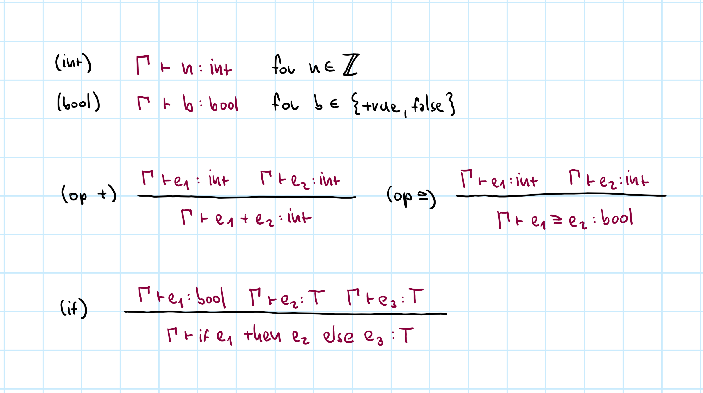
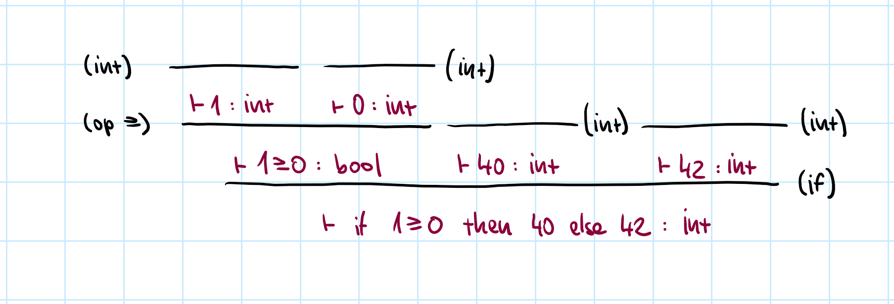
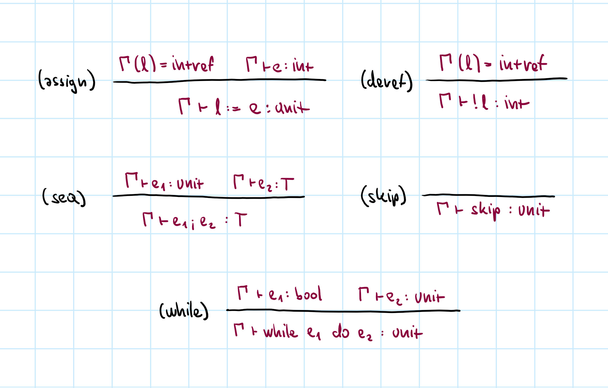
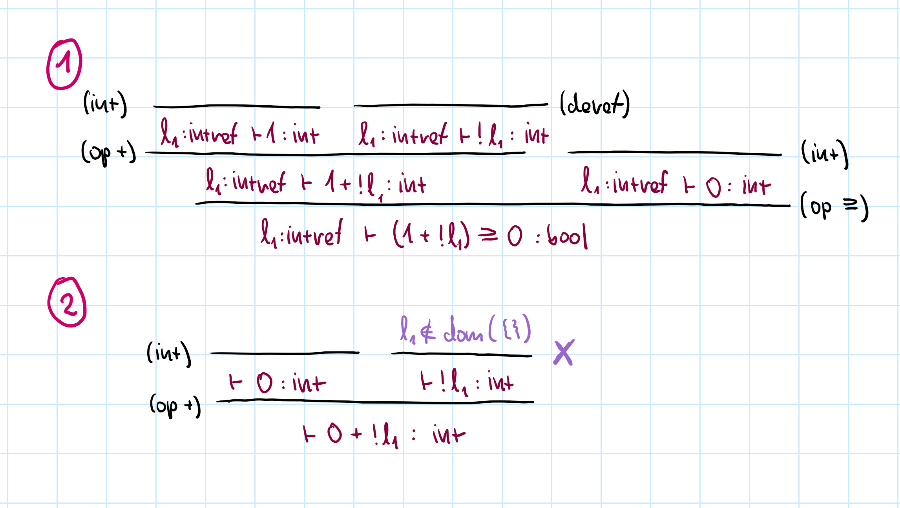

NPRG085: Theory of Programming Languages
Types for imperative language
Tomáš Petříček and Vít Šefl
petricek@d3s.mff.cuni.cz | sefl@ksvi.mff.cuni.cz
@tomasp.net | https://tomasp.net

Reminder
Operational semantics

Derivation rules for the full L1 language

Step-by-step derivation example
Sequence using individual \(\rightarrow\) steps
Every \(\rightarrow\) justified using a rule name!
Types
Motivation and background
Types
Different uses of types
- Define what programs make sense
- Prevent errors before execution
- Guarantee other program properties
- Useful information for the programmer
- Guide compiler optimizations
Types across languages

TypeScript
- Editor tooling and documentation
- No strict formal guarantees
OCaml
- Guarantee safety properties
- Allow efficient compilation
Agda, Idris, Lean
- Use types to prove (program) properties!
$ cat test.c
#include <stdio.h>
int main(void) {
char msg[] = "Hello world";
char buf[4];
buf[4] = 'J';
printf("%s\n", msg);
return 0;
}
What types guarantee?
No undefined behavior!
$ cat test.c
#include <stdio.h>
int main(void) {
char msg[] = "Hello world";
char buf[4];
buf[4] = 'J';
printf("%s\n", msg);
return 0;
}
$ gcc test.c && ./test
Jello world
What types guarantee?
No undefined behavior!
Writing to a value out of array bounds
C does not specify how arrays are allocated
Types
What is correctness?
-
There is no undefined behavior
Out of bounds access, reading non-existent field, etc. -
Expressing undefined behavior formally
It never happens that there is no reduction \(\langle e, s \rangle \not\rightarrow\) -
Beware of non-termination
There may be no \(v\) such that \(\langle e, s \rangle \rightarrow^{*} \langle v, s' \rangle\) -
Beware of starting with valid \(s\)
Even the \((\text{assign})\) rule requires that \(l \in \text{dom}(s)\)
Types
Defining type systems
Typing judgement
\(\boxed{\Gamma \vdash e : \tau}\)
Given a typing context \(\Gamma\), the
type of the expression \(e\) is \(\tau\).
- \(\Gamma\) - locations in store, variables in scope
- \(e\) - expression we want to type check
- \(\tau\) - type that we want to verify
- Relation defined using inference rules
Type checking only
- Know the context \(\Gamma\), expression \(e\) and type \(\tau\)!
- Looking for a derivation tree using typing rules
- Type inference & program synthesis harder!

Examples
Arguments of correct types
References
are available
No mismatched return values

Syntax of types
Primitive types only
Contexts \(\Gamma\) are finite partial maps from location names \(\mathbb{L}\) to location types \(T_{loc}\)
Location types are
only ints (for now)

Typing rules for primitives, operators and if
Assumptions are other judgements or side-conditions
Example typing derivation

Look at the syntactic structure, choose a rule to apply
Repeat for all sub-expressions until done
Conditional expression can be of any type!

Store and sequencing
Store access requires \(l\) is in \(\Gamma\)
No construct modifies \(\Gamma\) (now)

Example #1: Arguments match and \(l_1\) is in the context
Example #2: Accessing undefined location \(l_1\)
Typing rules
Interesting design alternatives
- Syntax directed rules determined by structure
- Context is a set, not ordered list
- We never add to or remove from the store
- Sequencing requires
skiplike the semantics
Properties
What is a good type system?
Well-typed programs do not go wrong
Well-typed programs do not get stuck
Theorem (Progress)
If \(\Gamma \vdash e : \tau\) and \(dom(\Gamma)\subseteq dom(s)\) then either \(e\) is a
value or there exist \(e', s'\) such that \(\langle e, s \rangle \rightarrow \langle e', s'\rangle\).
Theorem (Preservation)
If \(\Gamma \vdash e : \tau\) and \(dom(\Gamma) \subseteq dom(s)\) and
\(\langle e, s \rangle \rightarrow \langle e', s'\rangle\)
then \(\Gamma \vdash e' : \tau\)
and \(dom(\Gamma) \subseteq dom(s')\).
Well-typed programs do not get stuck
Theorem (Safety)
If \(\Gamma \vdash e : \tau\) and \(dom(\Gamma)\subseteq dom(s)\) and
\(\langle e, s \rangle \rightarrow^{*} \langle e', s'\rangle\)
then either
\(e'\) is a value or there exist \(e'', s''\) such
that \(\langle e', s' \rangle \rightarrow \langle e'', s''\rangle\).
What this means
- Well-typed programs never get stuck
- Well-typed programs never reach undefined behavior
- They may still run forever
Conclusions
Types for imperative language
Conclusions
- Types serve many purposes in practice
- Our models are about type safety
- No undefined behavior / no stuck state
- Safety = Progress + Preservation